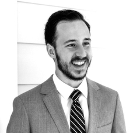

Contact:


About
I am a passionate generalist, currently interested in the intersection of ML and software engineering. I hold a number of certifications, including the AWS Machine Learning Speciality and Salesforce Platform Developer II.
I lead a team of Support Engineers at nCino, a leading fintech company built on Salesforce. Previously, I was a Hollings Scholar with NOAA's Earth Systems Research Laboratory, where I worked on geospatial modeling of air masses.
You can find more about my background on LinkedIn. Resume available upon request.